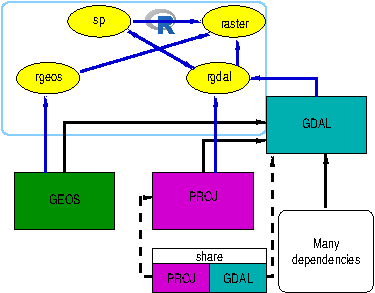
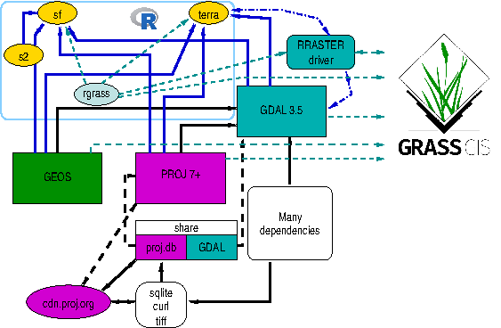

Introduction
The original R-GRASS interface (R. S. Bivand
2000; Neteler and Mitasova 2008) was designed to move raster and
later vector data between R and GRASS GIS. To do this, use was made of
intermediate files, often using the external GDAL library on both sides.
On the R side, the rgdal now archived package was used,
interfacing GDAL and PROJ as GRASS GIS also did. The GRASS commands
r.in.gdal, r.out.gdal, v.in.ogr
and v.out.ogr were matched by rgdal
functions using the same underlying external libraries:

GDAL was supplemented for raster data by simply reading and writing
uncompressed binary files using r.in.bin and
r.out.bin, with custom functions on the R side. As then
written, the R-GRASS interface used sp classes for both
raster and vector data, supplemented more recently with
sf classes for vector data only.
The current version of the R-GRASS interface has been simplified to
use the terra package because it, like
sf and rgdal before it, links to the
important external libraries. The workhorse driver is known as
RRASTER, and has been widely used in
raster and terra (see also (https://rspatial.org)). It
uses GDAL but writes a flat uncompressed binary file. Using
terra::rast() also appears to preserve category names and
colour tables, but needs further testing (see (https://github.com/osgeo/rgrass/issues/42)).

From GDAL 3.5.0, the RRASTER driver also supports
WKT2_2019 CRS representations; in earlier versions of GDAL, the driver
only supported the proj-string representation (https://github.com/osgeo/rgrass/issues/51).
These changes mean that users transferring data between R and GRASS
will need to coerce between terra classes
SpatVector and SpatRaster and the class system
of choice. In addition, SpatRaster is only read into memory
from file when this is required, so requiring some care.
Loading and attaching packages
This vignette is constructed conditioning on the availability of aforementioned R packages, i.e. if some were missing at the time of package building, some code blocks will not be displayed.
On loading and attaching, terra displays its version:
## terra 1.8.5## Linking to GEOS 3.10.2, GDAL 3.4.1, PROJ 8.2.1; sf_use_s2() is TRUE## Loading required package: abindterra::gdal() tells us the versions of the external
libraries being used by terra:
gdal(lib = "all")## gdal proj geos
## "3.4.1" "8.2.1" "3.10.2"When using CRAN binary packages built static for Windows and macOS, the R packages will use the same versions of the external libraries, but not necessarily the same versions as those against which GRASS was installed.
"SpatVector" coercion
In the terra package (Hijmans
2022b), vector data are held in "SpatVector"
objects. This means that when read_VECT() is used, a
"SpatVector" object is returned, and the same class of
object is needed for write_VECT() for writing to GRASS.
fv <- system.file("ex/lux.shp", package = "terra")
(v <- vect(fv))## class : SpatVector
## geometry : polygons
## dimensions : 12, 6 (geometries, attributes)
## extent : 5.74414, 6.528252, 49.44781, 50.18162 (xmin, xmax, ymin, ymax)
## source : lux.shp
## coord. ref. : lon/lat WGS 84 (EPSG:4326)
## names : ID_1 NAME_1 ID_2 NAME_2 AREA POP
## type : <num> <chr> <num> <chr> <num> <num>
## values : 1 Diekirch 1 Clervaux 312 1.808e+04
## 1 Diekirch 2 Diekirch 218 3.254e+04
## 1 Diekirch 3 Redange 259 1.866e+04These objects are always held in memory, so there is no
inMemory() method:
## Error : unable to find an inherited method for function 'inMemory' for signature 'x = "SpatVector"'The coordinate reference system is expressed in WKT2-2019 form:
## GEOGCRS["WGS 84",
## DATUM["World Geodetic System 1984",
## ELLIPSOID["WGS 84",6378137,298.257223563,
## LENGTHUNIT["metre",1]]],
## PRIMEM["Greenwich",0,
## ANGLEUNIT["degree",0.0174532925199433]],
## CS[ellipsoidal,2],
## AXIS["geodetic latitude (Lat)",north,
## ORDER[1],
## ANGLEUNIT["degree",0.0174532925199433]],
## AXIS["geodetic longitude (Lon)",east,
## ORDER[2],
## ANGLEUNIT["degree",0.0174532925199433]],
## ID["EPSG",4326]]
"sf"
Most new work should use vector classes defined in the
sf package (Pebesma 2022,
2018). In this case, coercion uses st_as_sf():
v_sf <- st_as_sf(v)
v_sf## Simple feature collection with 12 features and 6 fields
## Geometry type: POLYGON
## Dimension: XY
## Bounding box: xmin: 5.74414 ymin: 49.44781 xmax: 6.528252 ymax: 50.18162
## Geodetic CRS: WGS 84
## First 10 features:
## ID_1 NAME_1 ID_2 NAME_2 AREA POP
## 1 1 Diekirch 1 Clervaux 312 18081
## 2 1 Diekirch 2 Diekirch 218 32543
## 3 1 Diekirch 3 Redange 259 18664
## 4 1 Diekirch 4 Vianden 76 5163
## 5 1 Diekirch 5 Wiltz 263 16735
## 6 2 Grevenmacher 6 Echternach 188 18899
## 7 2 Grevenmacher 7 Remich 129 22366
## 8 2 Grevenmacher 12 Grevenmacher 210 29828
## 9 3 Luxembourg 8 Capellen 185 48187
## 10 3 Luxembourg 9 Esch-sur-Alzette 251 176820
## geometry
## 1 POLYGON ((6.026519 50.17767...
## 2 POLYGON ((6.178368 49.87682...
## 3 POLYGON ((5.881378 49.87015...
## 4 POLYGON ((6.131309 49.97256...
## 5 POLYGON ((5.977929 50.02602...
## 6 POLYGON ((6.385532 49.83703...
## 7 POLYGON ((6.316665 49.62337...
## 8 POLYGON ((6.425158 49.73164...
## 9 POLYGON ((5.998312 49.69992...
## 10 POLYGON ((6.039474 49.44826...and the vect() method to get from sf to
terra:
v_sf_rt <- vect(v_sf)
v_sf_rt## class : SpatVector
## geometry : polygons
## dimensions : 12, 6 (geometries, attributes)
## extent : 5.74414, 6.528252, 49.44781, 50.18162 (xmin, xmax, ymin, ymax)
## coord. ref. : lon/lat WGS 84 (EPSG:4326)
## names : ID_1 NAME_1 ID_2 NAME_2 AREA POP
## type : <num> <chr> <num> <chr> <num> <num>
## values : 1 Diekirch 1 Clervaux 312 1.808e+04
## 1 Diekirch 2 Diekirch 218 3.254e+04
## 1 Diekirch 3 Redange 259 1.866e+04
all.equal(v_sf_rt, v, check.attributes = FALSE)## [1] TRUE
"Spatial"
To coerce to and from vector classes defined in the sp package (Roger S. Bivand, Pebesma, and Gomez-Rubio 2013), methods in raster are used as an intermediate step:
## Object of class SpatialPolygonsDataFrame
## Coordinates:
## min max
## x 5.74414 6.528252
## y 49.44781 50.181622
## Is projected: FALSE
## proj4string : [+proj=longlat +datum=WGS84 +no_defs]
## Data attributes:
## ID_1 NAME_1 ID_2 NAME_2
## Min. :1.000 Length:12 Min. : 1.00 Length:12
## 1st Qu.:1.000 Class :character 1st Qu.: 3.75 Class :character
## Median :2.000 Mode :character Median : 6.50 Mode :character
## Mean :1.917 Mean : 6.50
## 3rd Qu.:3.000 3rd Qu.: 9.25
## Max. :3.000 Max. :12.00
## AREA POP
## Min. : 76.0 Min. : 5163
## 1st Qu.:187.2 1st Qu.: 18518
## Median :225.5 Median : 26097
## Mean :213.4 Mean : 50167
## 3rd Qu.:253.0 3rd Qu.: 36454
## Max. :312.0 Max. :182607## [1] TRUE
"SpatRaster" coercion
In the terra package, raster data are held in
"SpatRaster" objects. This means that when
read_RAST() is used, a "SpatRaster" object is
returned, and the same class of object is needed for
write_RAST() for writing to GRASS.
fr <- system.file("ex/elev.tif", package = "terra")
(r <- rast(fr))## class : SpatRaster
## dimensions : 90, 95, 1 (nrow, ncol, nlyr)
## resolution : 0.008333333, 0.008333333 (x, y)
## extent : 5.741667, 6.533333, 49.44167, 50.19167 (xmin, xmax, ymin, ymax)
## coord. ref. : lon/lat WGS 84 (EPSG:4326)
## source : elev.tif
## name : elevation
## min value : 141
## max value : 547In general, "SpatRaster" objects are files, rather than
data held in memory:
## [1] FALSE
"stars"
The stars package (Pebesma
2021) uses GDAL through sf. A coercion method is
provided from "SpatRaster" to "stars":
r_stars <- st_as_stars(r)
print(r_stars)## stars object with 2 dimensions and 1 attribute
## attribute(s):
## Min. 1st Qu. Median Mean 3rd Qu. Max. NA's
## elev.tif 141 291 333 348.3366 406 547 3942
## dimension(s):
## from to offset delta refsys point x/y
## x 1 95 5.742 0.008333 WGS 84 FALSE [x]
## y 1 90 50.19 -0.008333 WGS 84 FALSE [y]which round-trips in memory.
(r_stars_rt <- rast(r_stars))## class : SpatRaster
## dimensions : 90, 95, 1 (nrow, ncol, nlyr)
## resolution : 0.008333333, 0.008333333 (x, y)
## extent : 5.741667, 6.533333, 49.44167, 50.19167 (xmin, xmax, ymin, ymax)
## coord. ref. : lon/lat WGS 84 (EPSG:4326)
## source(s) : memory
## name : elev.tif
## min value : 141
## max value : 547When coercing to "stars_proxy" the same applies:
(r_stars_p <- st_as_stars(r, proxy = TRUE))## stars_proxy object with 1 attribute in 1 file(s):
## $elev.tif
## [1] "[...]/elev.tif"
##
## dimension(s):
## from to offset delta refsys point x/y
## x 1 95 5.742 0.008333 WGS 84 FALSE [x]
## y 1 90 50.19 -0.008333 WGS 84 FALSE [y]with coercion from "stars_proxy" also not reading data
into memory:
(r_stars_p_rt <- rast(r_stars_p))## class : SpatRaster
## dimensions : 90, 95, 1 (nrow, ncol, nlyr)
## resolution : 0.008333333, 0.008333333 (x, y)
## extent : 5.741667, 6.533333, 49.44167, 50.19167 (xmin, xmax, ymin, ymax)
## coord. ref. : lon/lat WGS 84 (EPSG:4326)
## source : elev.tif
## name : elevation
## min value : 141
## max value : 547
"RasterLayer"
From version 3.6-3 the raster package (Hijmans 2022a) uses terra for
all GDAL operations. Because of this, coercing a
"SpatRaster" object to a "RasterLayer" object
is simple:
(r_RL <- raster(r))## class : RasterLayer
## dimensions : 90, 95, 8550 (nrow, ncol, ncell)
## resolution : 0.008333333, 0.008333333 (x, y)
## extent : 5.741667, 6.533333, 49.44167, 50.19167 (xmin, xmax, ymin, ymax)
## crs : +proj=longlat +datum=WGS84 +no_defs
## source : elev.tif
## names : elevation
## values : 141, 547 (min, max)
inMemory(r_RL)## [1] FALSEThe WKT2-2019 CRS representation is present but not shown by default:
## GEOGCRS["unknown",
## DATUM["World Geodetic System 1984",
## ELLIPSOID["WGS 84",6378137,298.257223563,
## LENGTHUNIT["metre",1]],
## ID["EPSG",6326]],
## PRIMEM["Greenwich",0,
## ANGLEUNIT["degree",0.0174532925199433],
## ID["EPSG",8901]],
## CS[ellipsoidal,2],
## AXIS["longitude",east,
## ORDER[1],
## ANGLEUNIT["degree",0.0174532925199433,
## ID["EPSG",9122]]],
## AXIS["latitude",north,
## ORDER[2],
## ANGLEUNIT["degree",0.0174532925199433,
## ID["EPSG",9122]]]]This object (held on file rather than in memory) can be round-tripped:
(r_RL_rt <- rast(r_RL))## class : SpatRaster
## dimensions : 90, 95, 1 (nrow, ncol, nlyr)
## resolution : 0.008333333, 0.008333333 (x, y)
## extent : 5.741667, 6.533333, 49.44167, 50.19167 (xmin, xmax, ymin, ymax)
## coord. ref. : +proj=longlat +datum=WGS84 +no_defs
## source : elev.tif
## name : elevation
## min value : 141
## max value : 547
"Spatial"
"RasterLayer" objects can be used for coercion from a
"SpatRaster" object to a
"SpatialGridDataFrame" object:
## Object of class SpatialGridDataFrame
## Coordinates:
## min max
## s1 5.741667 6.533333
## s2 49.441667 50.191667
## Is projected: FALSE
## proj4string : [+proj=longlat +datum=WGS84 +no_defs]
## Grid attributes:
## cellcentre.offset cellsize cells.dim
## s1 5.745833 0.008333333 95
## s2 49.445833 0.008333333 90
## Data attributes:
## elevation
## Min. :141.0
## 1st Qu.:291.0
## Median :333.0
## Mean :348.3
## 3rd Qu.:406.0
## Max. :547.0
## NA's :3942The WKT2-2019 CRS representation is present but not shown by default:
## GEOGCRS["unknown",
## DATUM["World Geodetic System 1984",
## ELLIPSOID["WGS 84",6378137,298.257223563,
## LENGTHUNIT["metre",1]],
## ID["EPSG",6326]],
## PRIMEM["Greenwich",0,
## ANGLEUNIT["degree",0.0174532925199433],
## ID["EPSG",8901]],
## CS[ellipsoidal,2],
## AXIS["longitude",east,
## ORDER[1],
## ANGLEUNIT["degree",0.0174532925199433,
## ID["EPSG",9122]]],
## AXIS["latitude",north,
## ORDER[2],
## ANGLEUNIT["degree",0.0174532925199433,
## ID["EPSG",9122]]]]This object can be round-tripped, but use of raster forefronts the Proj.4 string CRS representation:
(r_sp_RL_rt <- raster(r_sp_RL))## class : RasterLayer
## dimensions : 90, 95, 8550 (nrow, ncol, ncell)
## resolution : 0.008333333, 0.008333333 (x, y)
## extent : 5.741667, 6.533333, 49.44167, 50.19167 (xmin, xmax, ymin, ymax)
## crs : +proj=longlat +datum=WGS84 +no_defs
## source : memory
## names : elevation
## values : 141, 547 (min, max)## GEOGCRS["unknown",
## DATUM["World Geodetic System 1984",
## ELLIPSOID["WGS 84",6378137,298.257223563,
## LENGTHUNIT["metre",1]],
## ID["EPSG",6326]],
## PRIMEM["Greenwich",0,
## ANGLEUNIT["degree",0.0174532925199433],
## ID["EPSG",8901]],
## CS[ellipsoidal,2],
## AXIS["longitude",east,
## ORDER[1],
## ANGLEUNIT["degree",0.0174532925199433,
## ID["EPSG",9122]]],
## AXIS["latitude",north,
## ORDER[2],
## ANGLEUNIT["degree",0.0174532925199433,
## ID["EPSG",9122]]]]
(r_sp_rt <- rast(r_sp_RL_rt))## class : SpatRaster
## dimensions : 90, 95, 1 (nrow, ncol, nlyr)
## resolution : 0.008333333, 0.008333333 (x, y)
## extent : 5.741667, 6.533333, 49.44167, 50.19167 (xmin, xmax, ymin, ymax)
## coord. ref. : +proj=longlat +datum=WGS84 +no_defs
## source(s) : memory
## name : elevation
## min value : 141
## max value : 547
crs(r_sp_RL_rt)## Coordinate Reference System:
## Deprecated Proj.4 representation: +proj=longlat +datum=WGS84 +no_defs
## WKT2 2019 representation:
## GEOGCRS["unknown",
## DATUM["World Geodetic System 1984",
## ELLIPSOID["WGS 84",6378137,298.257223563,
## LENGTHUNIT["metre",1]],
## ID["EPSG",6326]],
## PRIMEM["Greenwich",0,
## ANGLEUNIT["degree",0.0174532925199433],
## ID["EPSG",8901]],
## CS[ellipsoidal,2],
## AXIS["longitude",east,
## ORDER[1],
## ANGLEUNIT["degree",0.0174532925199433,
## ID["EPSG",9122]]],
## AXIS["latitude",north,
## ORDER[2],
## ANGLEUNIT["degree",0.0174532925199433,
## ID["EPSG",9122]]]]Coercion to the sp
"SpatialGridDataFrame" representation is also provided by
stars:
## Object of class SpatialGridDataFrame
## Coordinates:
## min max
## x 5.741667 6.533333
## y 49.441667 50.191667
## Is projected: FALSE
## proj4string : [+proj=longlat +datum=WGS84 +no_defs]
## Grid attributes:
## cellcentre.offset cellsize cells.dim
## x 5.745833 0.008333333 95
## y 49.445833 0.008333333 90
## Data attributes:
## elev.tif
## Min. :141.0
## 1st Qu.:291.0
## Median :333.0
## Mean :348.3
## 3rd Qu.:406.0
## Max. :547.0
## NA's :3942## GEOGCRS["WGS 84",
## DATUM["World Geodetic System 1984",
## ELLIPSOID["WGS 84",6378137,298.257223563,
## LENGTHUNIT["metre",1]]],
## PRIMEM["Greenwich",0,
## ANGLEUNIT["degree",0.0174532925199433]],
## CS[ellipsoidal,2],
## AXIS["geodetic latitude (Lat)",north,
## ORDER[1],
## ANGLEUNIT["degree",0.0174532925199433]],
## AXIS["geodetic longitude (Lon)",east,
## ORDER[2],
## ANGLEUNIT["degree",0.0174532925199433]],
## ID["EPSG",4326]]and can be round-tripped:
(r_sp_stars_rt <- rast(st_as_stars(r_sp_stars)))## class : SpatRaster
## dimensions : 90, 95, 1 (nrow, ncol, nlyr)
## resolution : 0.008333333, 0.008333333 (x, y)
## extent : 5.741667, 6.533333, 49.44167, 50.19167 (xmin, xmax, ymin, ymax)
## coord. ref. : lon/lat WGS 84 (EPSG:4326)
## source(s) : memory
## name : elev.tif
## min value : 141
## max value : 547``
## GEOGCRS["unknown",
## DATUM["World Geodetic System 1984",
## ELLIPSOID["WGS 84",6378137,298.257223563,
## LENGTHUNIT["metre",1]],
## ID["EPSG",6326]],
## PRIMEM["Greenwich",0,
## ANGLEUNIT["degree",0.0174532925199433],
## ID["EPSG",8901]],
## CS[ellipsoidal,2],
## AXIS["longitude",east,
## ORDER[1],
## ANGLEUNIT["degree",0.0174532925199433,
## ID["EPSG",9122]]],
## AXIS["latitude",north,
## ORDER[2],
## ANGLEUNIT["degree",0.0174532925199433,
## ID["EPSG",9122]]]]